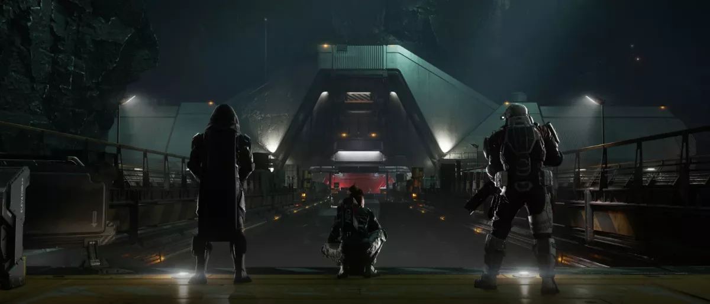
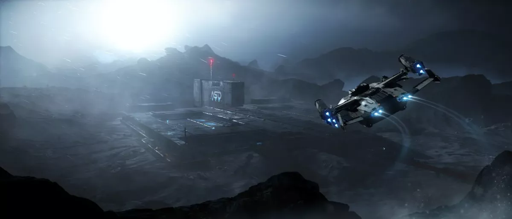
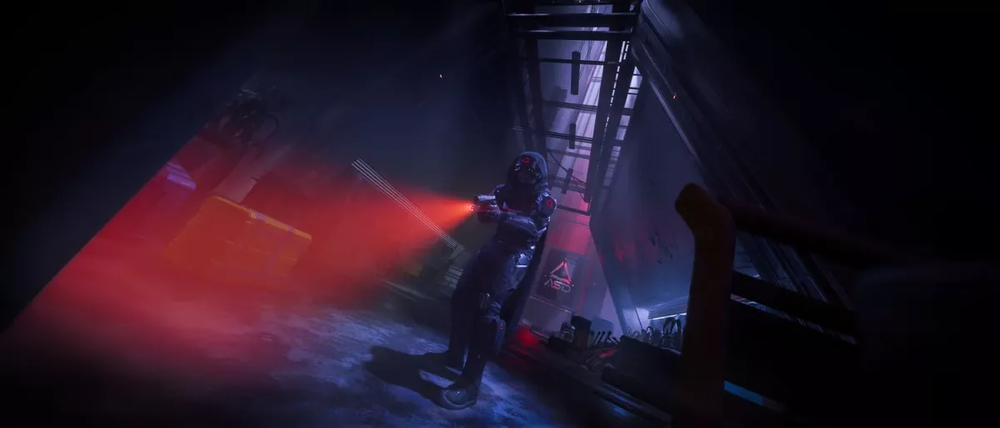

Installations Onyx : Tout ce qu'il faut savoir
Les installations Onyx représentent l’une des expériences les plus complexes et gratifiantes introduites récemment. Plongez au cœur du projet secret Hypérion du docteur Jorit, entre énigmes mortelles, radiations et fusillades tactiques.
1. Prérequis et Équipement Indispensable
Pour accéder à cette mission, vous devez accepter les contrats d'Investigation de l'inspecteur Arken Malor (HROW). Il vous faudra d'abord compléter sept missions d'introduction. La mission finale se déroulera dans l'une des 200+ installations Onyx réparties dans Stanton (privilégiez ArcCorp ou Microtech pour éviter les autres joueurs).
Votre Inventaire pour Survivre
- Armure lourde : Indispensable pour la résistance aux radiations et aux dégâts. Prévoyez un grand sac à dos.
- Multi-Tool 3-en-1 : Vous devez avoir les attachements Rayon Tracteur, Minage, et Recyclage. Pensez à prendre une cartouche de recharge.
- Soin complet : Medgun, recharges, MedPens, DetoxPens et DeconPens. L'hydratation est également requise.
- Armement : Un fusil d'assaut polyvalent (ex: P4-AR Parallax avec viseur Topus Scorch) ou un combo Pompe (Prism) / Sniper.
Le Système de Respawn
Mort par PNJ : Vous réapparaîtrez dans le hall principal de l'installation après 30
secondes.
Mort par Joueur (ou Suicide) : Vous retournerez directement à votre capitale de départ !
2. L'Aile d'Ingénierie : Puzzles et Dangers
Votre première épreuve. Cette zone teste votre logique sous pression radioactive. Le but final est de récupérer un précieux "Réactif".
Puzzle 1 : Le Liquide de Refroidissement
Utilisez l'accessoire de minage du Multi-Tool pour détruire la stalagmite qui bloque le mécanisme, puis passez à l'accessoire de recyclage pour reboucher les fuites. Attention : le mécanisme se réinitialise toutes les quatre pulsations radioactives. Mettez-vous à couvert à chaque vague !
Puzzle 2 : Le Réacteur à Plasma
Abaissez le levier pour générer du plasma. Retirez les stalagmites des conduits, réparez le tuyau et insérez une batterie trouvée à proximité pour réalimenter le transfert.
Puzzle 3 : Les Leviers en Apesanteur (Zero-G)
Nettoyez d'abord la salle immense de tous les ennemis (le fusil de sniper est recommandé). Activez ensuite les leviers dans l'ordre de 1 à 6 dans le temps imparti. Gérez votre vitesse avec précaution pour éviter de vous écraser.
Astuce Butin : Cette aile abrite 3 caisses contenant de très rares Torses d'armure ASD.


3. L'Aile de Recherche et Armure ASD
Dans cette zone, vous cherchez un "Catalyseur". Vous avez trois options :
- Catalyseur XTL (Étage 7) : Placez 5 cadavres dans le processeur de biomasse, désintégrez-les et récupérez le code sur l'écran.
- Catalyseur PWL (Étage 6) : Stabilisez la réaction radioactive au labo gravitationnel et récupérez l'enregistrement près du scientifique mort.
- Catalyseur RGL (Labo Médical) : Lancez une analyse de régénération et téléchargez les données.
La chasse au set ASD : Explorez bien la zone. Les Bras ASD sont près du labo infecté de copions, les Jambes ASD dans le labo médical, et les Sacs à dos ASD au centre de la recherche. Quittez la zone via l'ascenseur en défendant votre position.
4. Le Site B et la Conclusion
C'est la dernière ligne droite, purement axée sur le combat. Sortez le sniper dès l'ascenseur pour dégager le bas. Traversez prudemment, évitez la passerelle mobile et éliminez les tourelles automatiques redoutables.
Butin Site B : C'est ici que vous trouverez l'Armure Corbell, le Torse Corbell Maur, et de puissantes Armes Frainel dans la première salle de stockage.
Trouvez le code au plafond d'une salle de contrôle, frayez-vous un chemin jusqu'au laboratoire secret du Dr Jorit et lancez l'expérience depuis l'ordinateur en hauteur pour terminer la mission !
5. Les Récompenses et les Recombinants
À la fin de la mission, vous gagnez un Recombinant (ex: Réactif 01 + Catalyseur RGL = Recombinant RGL01).
L'échange avec Wikello
Allez voir le PNJ vendeur Wikello pour échanger vos Recombinants contre du matériel unique, comme l'Armure Corbell chromée et le Frainel Volt chromé. Pour l'armure complète, il vous faudra par exemple 5 RGL 1, 5 RGL 2 et 5 RGL 3. Cela implique de refaire la mission jusqu'à 15 fois en solo !
Armure geist
Tout au long du donjon vous trouverez des armures geist dans des caisses orange, cette armure parmet d'obtenir une discretion accrue, elle est disponible en plusieur couleurs ainsi que 3 variante rechercher par les joueur (ASD, FOREST, FROST)
Outillage, munitions et médicales
Si les installation onyx sont aussi aprécier, c'est aussi pour la grande quantité d'armement troubable sur place, que ce soit des arme, des munition, grenades ou autre telle que du materiel medicales. les installation onyx sont de bonne zone de farme a fin de s'equipper correctement.
Armure Corbelt
Outre l'armure geist trouvable sur le site A, il vous sera aussi possible de trouver l'armure corbalt sur le site B (version normal non chromé). il est recommandé d'apporter un sniper a fin de ce faciliter la tache.
Bonne chance dans les ténèbres du projet Hypérion, citoyen !